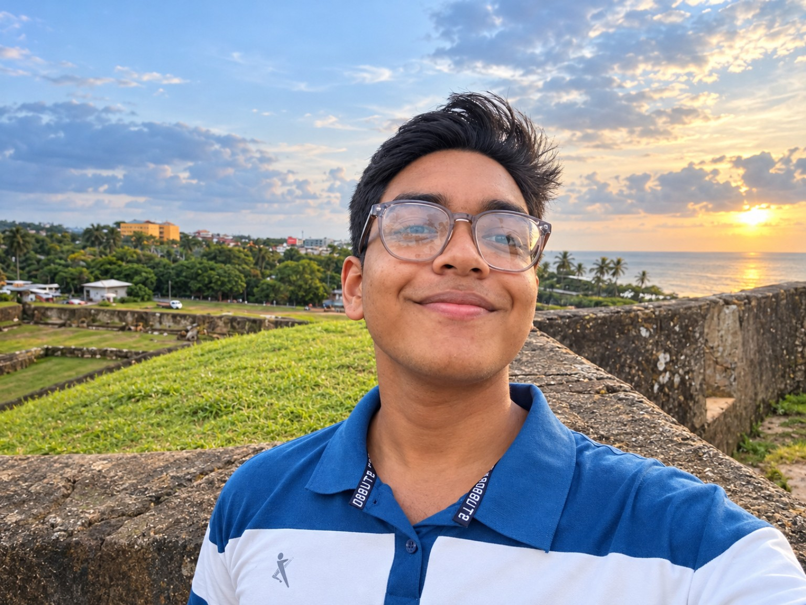

⚡
Electronics
Battery charging circuits, basic electronics, components, and practical circuit projects.
A Technology and Engineering student driven by curiosity, hands-on learning, and the challenge of turning ideas into practical solutions.

I am Damsith Sandaru, a Technology and Engineering student at Mahinda Rajapaksha College, Homagama. I am interested in electronics, automobile technology, and ICT, and I enjoy exploring how things work through practical projects.
I believe that progress comes from staying curious, learning by doing, and improving a little every day. I am also learning German as I work toward future opportunities in technology and engineering.
Areas I am studying, practising, and developing through learning and personal projects.
Battery charging circuits, basic electronics, components, and practical circuit projects.
Exploring vehicle systems, automotive technology, and future technician pathways.
Building digital skills and learning how software and technology can solve problems.
Learning through hands-on experiments, troubleshooting, and practical problem-solving.
Learning German step by step to prepare for future education and career opportunities.
Developing new skills, testing ideas, and documenting progress along the way.
A growing collection of practical work and areas of exploration. Project details can be added as each project is documented.
Exploring rechargeable battery packs, charging modules, voltage measurements, and safe charging principles.
Hands-on experiments with electronic components, circuits, and troubleshooting techniques.
Learning about vehicle systems and automotive technology through research and practical exploration.
Participating in technology-related activities and projects connected with the school Technology Society.
Project cards describe current areas of exploration. Add photos, dates, and what you personally built as you document each project.
Advanced Level — Technology stream
Focused on Engineering Technology, Science for Technology, and ICT, while developing practical technical skills.
Continue learning engineering and automobile technology, build practical projects, improve ICT skills, and develop German language proficiency for future opportunities.
For technology projects, collaboration, or a friendly conversation, reach out through one of these channels.
For privacy, this public portfolio links to the map you supplied without displaying your full home address.